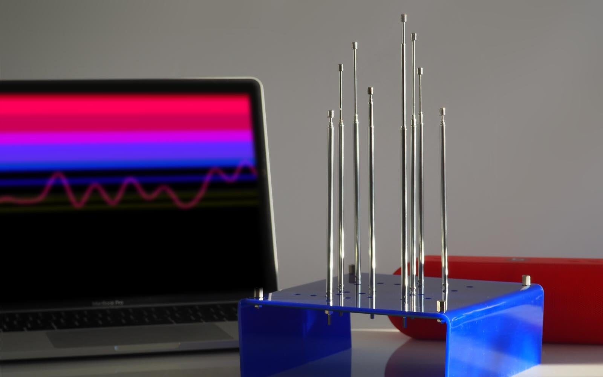
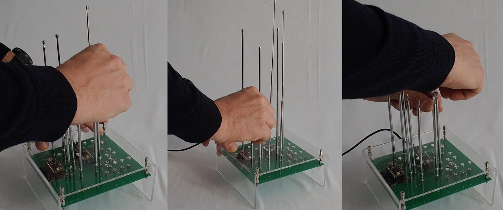
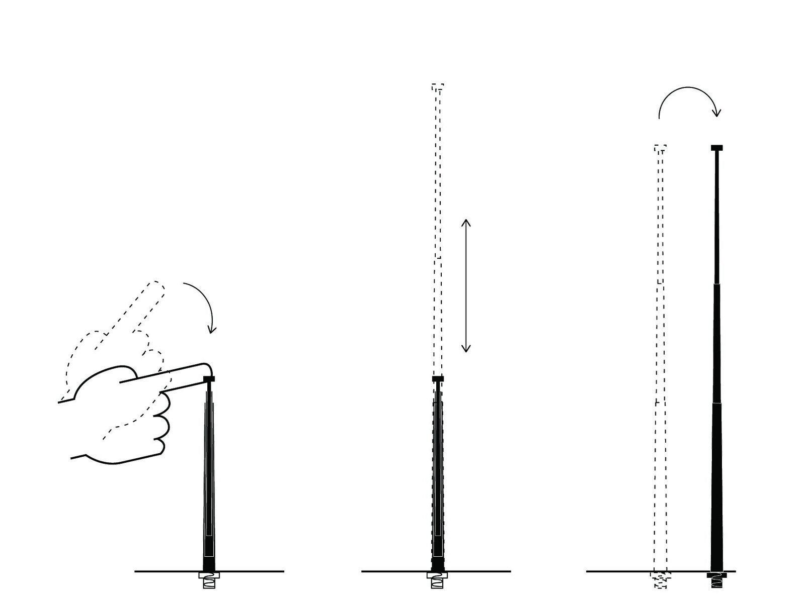
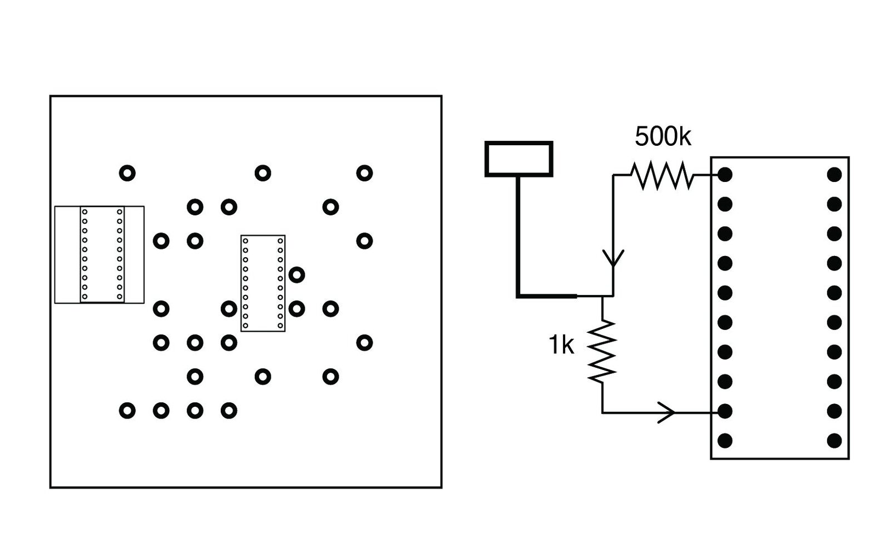
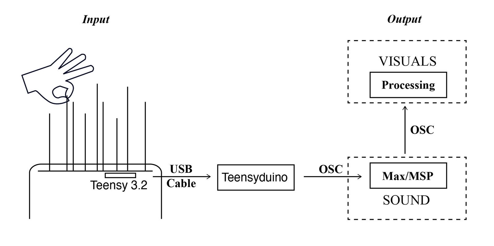
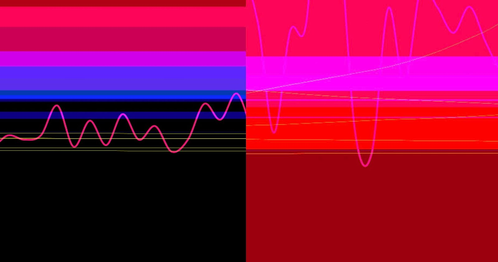

Tune Field
Abstract
This paper introduces Tune Field, a 3-dimensional tangible interface that combines and alters previously existing concepts of topographical, field sensing and capacitive touch interfaces as a method for musical expression and sound visualization. Users are invited to create experimental sound textures while modifying the topography of antennas. The interface’s touch antennas are randomly located on a box promoting exploration and discovery of gesture-to-sound relationships. This way, the interface opens space to playfully producing sound and triggering visuals; thus, converting Tune Field into a sensorial experience.
Author Keywords
Musical controller, Real-time expression, Shape-Changing Tangible Interface, Capacitive touch Interfaces, Sculptable Surface.
CCS Concepts
•Sound and music computing→Drone Synth; •Hardware → PCB design and layout; Tactile and interfaces; •General and reference → HCI and Design.


Introduction
There are two ways to make a classical sculpture; by addition or subtraction, so it happens with music and sound waves. Tune Field is influenced by this idea in its physical interaction, through a series of antennas that slide along the Z axis, and the sound generated, a minimalist drone characterized by its slight harmonic variations[1].
Creating music required a basic knowledge to play the right note on an instrument or a knob on a synthesizer. In the 20th century, more experimental music-making interfaces have been created that incorporate randomness and allow the user to interact with non-instrumental objects to create sound. This concept has been explored in Tune Field using antennas as an interface.
Antennas are commonly used in radio engineering as transducers to convert the voltage from a transmitter into a radio signal. In Tune Field, we measure its capacitance, allowing us to recognize its position in the Z-axis. In other words, as the antenna’s length varies so does its capacitance. Furthermore, since antennas can pick radio signals out of the air and convert them into a voltage, the neighboring antennas will interfere with the measurement of each individual one. Therefore, the electric field generated will interfere in the sound produced converting the antenna-scape into a sound sculpture constantly altered.
Finally, the drone sound created is complemented by a series of visuals that create an experience inspired by the one proposed by La Monte Young in Dream House[2]. An installation comprised of static sounds and light sculptures.


Figure 1: User interacting with Tune Field
Related Work
Tune Field’s uniqueness comes from the fact that it is able to combine contactless signal modulation and capacitive sensing techniques. Beside the aesthetic and sculptural advantages, Tune Field provides a UI/performance advantage building on the physicality of a knob or a slider with the advances explored by contactless instruments.
Capacitive Sensing Interfaces
In an effort to convey the concept of sculpting topography, two concepts emerged: the idea of stretching a fabric or creating a physical topography. In the first one, there are existing examples of instruments that use capacitive sensing fabrics, but this technology has limited application and relies on complex knitting techniques[3][4]. There are also some existing examples of topography using pin-based, actuated shape display technology like TRANSFORM[5]. Kinéphone builds on it to recreate instruments or serve as a music controller[6]. However, this solution relies on complex and expensive technology.
In the human-computer interaction field capacitive sensing has played a prominent role[7]. There are a lot of commercially available interfaces that can sense in the x/y axis, from the well-known Kaoss Pad[8] to the smartphone. Some of them also recognize the Z axis through pressure or doing a global, single z axis capacitive sensing. However, they cannot physically visualize it. As an alternative, antennas' capacitive touch capability represents a low-cost approach that can address this challenge.
Electric Field Sensing
The main instrument related to antennas is the Theremin. Although some consider it the greatest musical wonder of our time[9] its sound is limited to two axes, volume and pitch. However, some of the successors, such as the Theremini[10], defeats this limitation with its MIDI function. Years later, Max Mathews with its Radio Baton was able to compute the X, Y and Z coordinates of each Baton[11] These two innovations influenced many others in the field of contactless musical instruments and other applications based on electric field sensing[12], such as ScanFish[13] that was used in the brain opera[14].


Figure 2: Possible interactions with antennas: touch, slide up and down, change location of antenna.
Interface Design
Tune Field interface design consists of a series of antennas playfully distributed on a box with no labels that encourages spontaneous interactions. The lack of guidelines in the interface encourages users to touch, slide and change the position of the antennas to understand the impact on the sound and visuals produced.
Each antenna works as a capacitive touchpoint connected to one pin of Teensy 3.2 microcontroller. The PCB board design includes two Teensy 3.2 boards, one of them connected to a Teensy audio adaptor[15]. The initial design included the possibility of having an autonomous instrument where one of the microcontrollers analyzed the user interaction while the other generated the synthesis. It would be produced by the Teensy audio library as Grain Prism does[16]. The audio library[17], similar to Pure-Data or Max/MSP, is limited to the computational capability of the microcontroller, that is why we opted to produce its sound externally in Max/MSP.
Unlike other capacitive sensing interfaces, the antennas can recognize their height in the Z-axis and if it is being touched. These features allow replacing the use of other existing interfaces such as buttons or sliders. It also plays a collective role due to the magnetic field created which interferes in the capacitive sensing measurement of each antenna. This converts Tune Field into a novel interface that allows users to press, slide, tune or switch with a single interface touchpoint, an antenna.


Figure 3: Left, PCB design with antennas arrangement. Right, detail of antenna, each one connects to 2 pins of the Teensy, send and receive.
Software Design
The values collected from each antenna are processed through Teensy’s built-in Capacitive Sensor Library. Teensyduino sends the data by OSC first to Max/MSP to produce the sound, and later to Processing for the visuals, “Figure 4.”.


Figure 4: Simplified blueprint.
FM synthesis in Max/MSP
The antennas are sending continuous data which is averaged and smoothed before synthesis. When the antenna is touched there is a spike in the data that is discarded. The values recorded are scaled to later be used in the FM synthesis. Each antenna corresponds to a particular partial in the analysis frame[18]. On the other hand, analyses are made of the sound of Gong, Cello and Duduk samples with the Sigmund~ object[19]. In the original sound, we look at the 10 loudest partials and transfer these values forward to be combined with the input value of each antenna. Each partial from the analysis is resynthesized with that information using FM synthesis[20] creating a complex of new frequencies out of each analysis frequency. As a result, these sounds complexes come together to create a rich and evolving drone.
Once the sound is generated, it is further fed into a Sigmund~ object for analysis, and the 20 loudest frequency and amplitude pairs are collected and passed forward by OSC to the Processing application.
Visuals in Processing
Processing, the programming language for creative coding, creates the visuals for the drone sound with two overlapping elements, a collection of waves and a series of color bars. The waves visualize the last 20 amplitudes of the sound generated. Each bar represents a particular partial of the sound. The height is mapped to the value of the signal’s frequency, in hertz, and the weight corresponds to the amplitude of that particular frequency, “Figure 5.”.


Figure 5: Visuals produced in Processing. The right image has higher amplitudes since the bars' weights are bigger than in the left image.
Future Work
In the analysis frame, future work includes dedicating an antenna to select a specific instrument (Gong, Cello or Duduk). Also, this version uses static analysis, ideally, this would be continuous.
The visuals created are exclusively controlled by the sound spectrum. Future iterations will explore visualizations that rely less on color and more on shape or contrast as a visual differentiator.
Finally, the interface should explore different PCB designs and antenna arrangements, in a music sequencer, or by tones, frequencies etc. This would also impact how the antennas interfere with each other and modify the surrounding magnetic field.
Conclusions
This paper features Tune Field, an experimental and experiential musical interface composed of a series of antennas. This instrument allows users to interact and compose music in a novel way. Each antenna will see an impact on its height and on the overall magnetic field generated. Therefore, the sound and visuals produced can be altered converting this instrument into a ‘living’ sound sculpture that is constantly evolving.
Links
https://www.media.mit.edu/projects/tune-field/overview/
Acknowledgments
I would like to thank Professors Matthew Schumaker, Mark Feldmeier, and Zach Lieberman, as well as Thomas Sanchez and Andres Rico for their help with this project.
Citations
- ↩Gann, K. (2004). Thankless attempts at a definition of minimalism. Audio Culture: Readings in Modern Music, 299–303.
Young, L.M., Dream House, Mela Foundation, viewed 21 January 2021, <https://www.melafoundation.org/dream02.htm>;.
↩- ↩Chang, A., & Ishii, H. (2007). Zstretch: a stretchy fabric music controller. In Proceedings of the 7th international conference on New interfaces for musical expression (pp. 46–49).
- ↩Wicaksono, I., & Paradiso, J. A. (2017). Fabrickeyboard: multimodal textile sensate media as an expressive and deformable musical interface. In NIME (Vol. 17, pp. 348–353).
- ↩Ishii, H., Leithinger, D., Follmer, S., Zoran, A., Schoessler, P., & Counts, J. (2015). TRANSFORM: Embodiment of" Radical Atoms" at Milano Design Week. In Proceedings of the 33rd Annual ACM Conference Extended Abstracts on Human Factors in Computing Systems (pp. 687–694).
- ↩Xiao, X., Haddad, D. D., Sanchez, T., van Troyer, A., Kleinberger, R., Webb, P., … Ishii, H. (2016). Kinéphone: Exploring the Musical Potential of an Actuated Pin-Based Shape Display. In NIME (pp. 259–264).
- ↩Grosse-Puppendahl, T., Holz, C., Cohn, G., Wimmer, R., Bechtold, O., Hodges, S., … Smith, J. R. (2017). Finding common ground: A survey of capacitive sensing in human-computer interaction. In Proceedings of the 2017 CHI conference on human factors in computing systems (pp. 3293–3315).
<1999. Kaoss Pad, Korg, viewed 25 January 2021https://www.korg.com/us/products/dj/kaoss_pad_kp3_plus/index.php>;.
↩- ↩Glinsky, A. (2000). Theremin: ether music and espionage. University of Illinois Press.
- ↩Moog, B. (2015). Theremini.
- ↩Mathews, M. V. (1990). Three dimensional baton and gesture sensor. Google Patents.
- ↩Aylward, R., & Paradiso, J. A. (2017). 2006: Sensemble: A Wireless, Compact, Multi-user Sensor System for Interactive Dance. In A NIME Reader (pp. 235–251). Springer.
Paradiso, J.A., 1999. The ScanFish, Responsive Environments Group, viewed 25 January 2021, <https://resenv.media.mit.edu/EFS-Array/index.html>.
↩- ↩Paradiso, J. A. (1999). The brain opera technology: New instruments and gestural sensors for musical interaction and performance. Journal of New Music Research, 28(2), 130–149.
Stoffregen, P.J., Coon, R.C., Audio Adaptor Boards for Teensy 3.x and Teensy 4.x , PJRC, viewed 20 January 2021, <https://www.pjrc.com/store/teensy3_audio.html>.
↩- ↩Advincula, G. B., Haddad, D. D., & Larson, K. (2019). Grain Prism: Hieroglyphic Interface for Granular Sampling. In NIME (pp. 284–285).
Stoffregen, P.J., Coon, R.C., Teensy audio design tool, PJRC, viewed 20 January 2021, <https://www.pjrc.com/teensy/gui/>.
↩- ↩Puckette, M. S., Ucsd, M. S. P., Apel, T., & others. (1998). Real-time audio analysis tools for Pd and MSP.
Puckette, M.S., Lippe, C., Apel, T., Sinusoidal analysis and pitch tracking, Max and Max for Live Patches and Externals, viewed 21 January 2021, <http://vud.org/max/>.
↩- ↩Chowning, J. M. (1973). The synthesis of complex audio spectra by means of frequency modulation. Journal of the Audio Engineering Society, 21(7), 526–534.